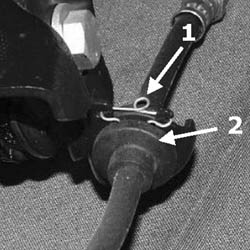

4410AF CHECK OF STATE OF SPRINGS ON LAYOUT BRACKETS
- Path
- Test > 44 SUSPENSION AND WHEELS > 4410 FRONT SUSPENSION > 4410A FRONT DAMPERS AND SPRINGS > 4410AF CHECK OF STATE OF SPRINGS ON LAYOUT BRACKETS
- Kind
- test / check procedure
- Applies to
- all engines; all production periods
- Interactive page
- https://sloeber94.github.io/elrnDB-fCrm/en/#/194002283
Applies to: all engines; all production periods
- Position the vehicle on a two column lift and raise it.
1. Check that there are no layout brackets without clips (1) that flexible brake pipes pass through.
2. If the clips are present, check that they are in good condition and that the rubber mountings (2a) are not damaged and do not have torn edges.
